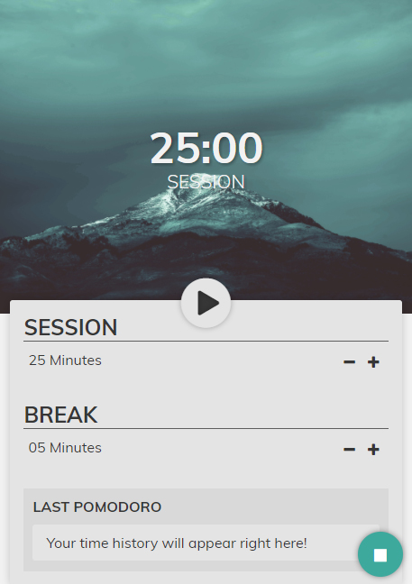

Pomodoro

Pomodoro Clock
Developed for FreeCodeCamp activity, the main focus is act like a count which takes breaks 5 minutes (as default) per time. This is an old Technique create around 1980s, and now a lot of people uses it (including me sometimes :D).